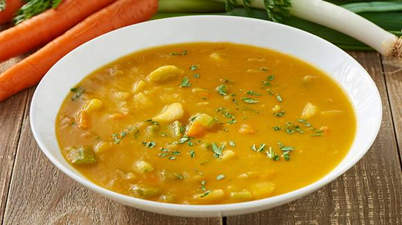

Receta Locro

Descripcion:
El locro es una especie de guiso de origen prehispánico y preincaico, típico de varios pueblos andinos, a base de zapallo, maíz ─especialmente blanco─ y papas, originario del área de la cordillera de los Andes, en Argentina, Perú, Chile, Ecuador, Bolivia y Paraguay .
Ingredientes:
- ½ kg de maíz blanco pisado
- 4 litros de agua
- Sal
- 1 kg de falda de ternera cortada en trozos
- 100 gramos de panceta
- 250 gramos de pechito de cerdo
- 2 cubitos de Sabor en Cubos Knorr de Panceta y Cebolla
- 200 gramos de porotos remojados y cocidos
- 2 o 3 chorizos
- 3 batatas
- 1 kg de zapallo
- 2 cucharadas de grasa
- 1 cebolla
- 1 morrón rojo
- 1 cucharada de pimentón
Preparacion:
- Lavá el maíz blanco y ponelo a remojar en el agua la noche anterior.
- Luego colocalo a fuego lento y cocinalo, pero no del todo. Agregale la carne de ternera, la panceta, el pechito de cerdo (todo en trozos chicos) y el Sabor en Cubos de Panceta y Cebolla.
- Cociná todo junto 40 minutos y agregá los chorizos, las batatas y el zapallo en trozos medianos y los porotos a último momento.
- Seguí cocinando lentamente. Incorporá más agua durante su cocción si fuera necesario: debe resultar espeso pero caldoso.
- Revolvé de vez en cuando y chequeá la sal.
- La salsa se coloca a último momento o se sirve en cada plato: derretí la grasa en una sartén, añadí la cebolla picada, rehogá y agregá el morrón bien picadito. Salteá todo junto sin dorar y condimentá con el pimentón y sal. Revolvé bien.